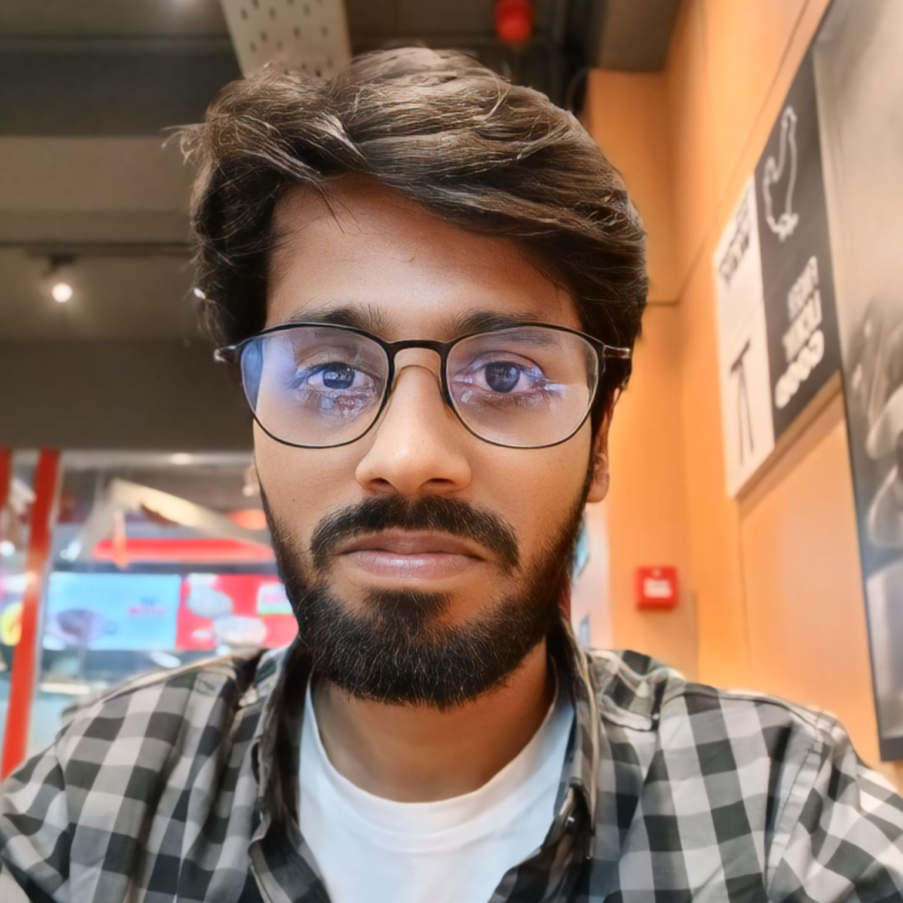

Ph.D. Candidate
Texas Tech University
|
TTU, Box 43104 Lubbock, TX 79409 |
|
| +1 806 544 2763 | |
| imsanjoykb@gmail.com | |
| imsanjoykb |
Sanjoy Kumar
I am a Ph.D. candidate in Applied Mathematics (Engineering Math) at Texas Tech University, working under the supervision of Dr. Yifan Wang. My research focuses on Physics-Informed Machine Learning, Scientific Computing, Computer Vision, and Robotics.
Currently, I am a Research Assistant at the High-Performance Computing Center (HPCC), where I develop hybrid physics-informed sequence models for microfluidic devices and biomechanical systems. My work combines multiphysics simulations with data-driven surrogates for real-time trajectory-based phenotyping.
Previously, I completed my B.Sc. in Electrical & Electronic Engineering at Shahjalal University of Science and Technology (2020) and have held positions as Sr. Machine Learning Engineer at Bista Solutions Inc and DataSense (iSocial Limited), where I developed production-scale AI systems and multimodal intelligent systems.
Research Interests
- Physics-Informed Machine Learning
- Scientific Computing & Numerical Methods
- Computer Vision & Multimodal AI
- Robotics & Control Systems
- High-Performance Computing
Recent News
- February, 2025 — Paper accepted to ICMLC Conference in China.
- February, 2025 — Built DeepSeek Distill Model for NL2SQL Generation. Details
- January, 2025 — Won 2nd Place in AIstronauts: Space Agents on a Mission.
- December, 2024 — Selected as Top Contributor in LabLab Developer Place.
- October, 2024 — Awarded Fellowship from University of Notre Dame.
- September, 2024 — Research paper accepted at ASYDE Workshop 2024.
Education
-
Ph.D. in Applied Mathematics (Engineering Math), 2026 - Present
Texas Tech University, Lubbock, TX
Research Areas: Machine Learning, Computer Vision, Physical AI, Robotics -
B.Sc. in Electrical & Electronic Engineering, 2016 - 2020
Shahjalal University of Science and Technology, Bangladesh
CGPA: 3.56/4.00